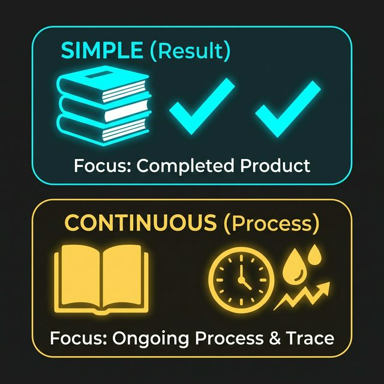

SİMPLE (SONUÇ VE SKOR)
"I have read three chapters."
Odak noktası sayıdır (3 bölüm). Eylem tamamlanmıştır ve ortada sayılabilir, ölçülebilir bir skor vardır. Kitap kapanmış ve masaya konmuştur.
CONTINUOUS (SÜREÇ VE EFOR)
"I have been reading all morning."
Odak noktası harcanan zamandır. Eylem yeni bitmiş veya hala devam ediyor olabilir. Yorulmuş gözler ve sürecin yarattığı fiziksel bir iz vardır.
